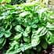
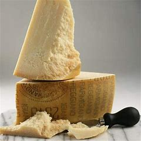
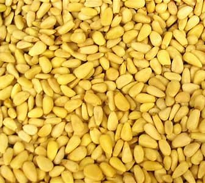
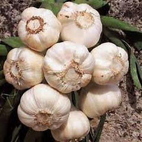
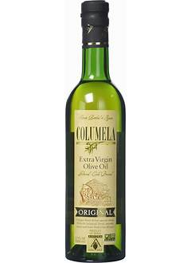
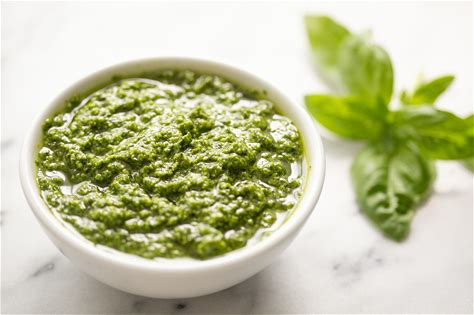

| Ingredient | Amount | Picture |
|---|---|---|
| Fresh Basil Leaves | 2 cups |  |
| Parmesan-Reggiano Cheese | 1/2 cups |  |
| Pine Nuts | 1/3 cups |  |
| Garlic | 3 cloves |  |
| Olive Oil | 3/4 cups |  |
| Place all ingrdients in a blender. | ||
| Blend on medium for 3 min (stopping to stir occasionally). | ||
| Add salt and pepper to taste. | ||
|  | ||